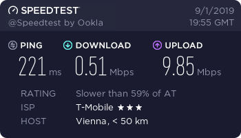
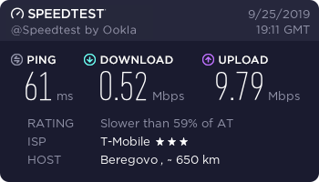
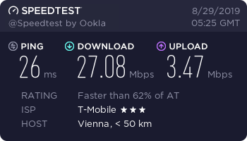
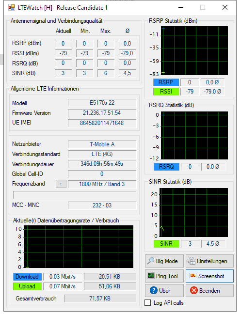

seit Wochen hab ich das Problem ,dass ich einen maximalen Download von max. 60 Mbps habe (oft sogar unter 20 Mbps) aber für einen 250/50 Mbps Tarif bezahle. Auch der Upload sollte viel höher sein. Leide ist es mir dadurch auch nicht möglich zu streamen. (Twitch)
Als ich das letztes mal mit der Hotline kontakt hatte lies die mich meinen Router komplett reseten was nichts gebracht hat und auch totaler schwachsinn war. Erst wie ich die Kostenpflichtige Hotline Angerufen habe wurde mir gesagt das der Sender eine Störung hat was natürlich nicht auf der Störungsseite von Magenta stand.
Mir ist natürlich klar das ich nie die volle Bandbreite erreichen kann, jedoch sind 60 Mbps bei weiten nicht das was ich haben sollte und das ist echt eine Frecheit.
Ich bin schon sehr lange Kunde bei T-Mobile und war immer mit dem Service bis jetzt zufrieden. Dafür habe ich auch gerne höhere Gebüren in kauf genommen. Leider habe ich das Gefühl, dass sich das seit Magenta total geändert hat und das Servicelevel im Keller ist. Ich bin auf jeden Fall schwer am überlegen ob nicht ein Betreiberwechsel sinvoller wäre als auf eine Lösung für das Problem zu warten.
Welche kostenpflichtige Hotline meinst du? Seit Magenta gibt es eine Technikhotline (0676 200 7777) welche unseren Kunden kostenfrei zur Verfügung steht. Auch alle anderen Servicenummern werden nicht gesondert verrechnet.
Es tut mir leid, dass du seit längerem mit einer geringen Bandbreite konfrontiert wirst. Da die Störung den Kolleginnen und Kollegen bekannt ist, gehe ich davon aus, dass an der Behebung bereits gearbeitet wird. Da wir hier keinen individuellen Support anbieten, bitte ich dich für nähere Infos nochmals unser Serviceteam zu kontaktieren. LG, Karo
Black Poseidon
Hallo Community
Muss leider auch sagen das ich , seit ca 1 1/2 Wochen Geschwindigkeits Verlust habe.
Am Anfang hatte ich noch ca 150 Mbit Download und ca 45 Mbit Upload
Bin extra Von Drei zu Magenta gewechselt da ich von der Geschwindigkeits Verfügbar keit erfreut war.
Jetzt habe ich " nur mehr " 50 Mbit Down und ca 10 Mbit Upload
Meine RSRP und RSSI Werte sind total im Keller.
An der Software und Hardware wurde nichts verändert.
Hoffe das es besser wird.. sonst bereue ich jetzt schon meine wechsel zu Magenta.. WEIl wenn ich das gewusst hätte wäre ich dort geblieben WEIl ich dort wenigstens ca 80 'Mbit und Full 50 Mbit upload hatte
Christian_E
Danke für euer Feedback.
Ich kann bestätigen, dass im August die Performance zurück gegangen ist.
Interessanterweise sowohl bei Magenta, als auch bei A1.
Ich führe das zurück auf die Urlaubszeit - viele sitzen zuhause und haben einfach viel Zeit zum Surfen.
Ich bin mal gespannt, ob man eine Entspannung im September wieder merken wird.
Ja da kommt die Dynamik bei LTE leider wieder ans Tageslicht.
@Black Poseidon
Poste doch bitte mal deine RSRP und SINR Werte.
Gibt es in deiner Nähe eine neue Baustelle, denn das kann sich alles auf das Signal auswirken.
Danke!
Bearbeitet
von Christian_E
Christian_E
Ach ja noch was...
Bei euren Fällen geht es um die Speed beim Smartphone oder betrifft das auch die LTE Router?
Black Poseidon
Es sind Keine Baustellen in der Nähe. und wie ich das gerade sehe sind STörungen drauf.. Diesen Wert hatte ich ganz ganz selten.. aber nicht dauerhaft##Eines hatte ich bemerkt
Also die Werte sind grundlegend nicht schlecht und sollte für eine schnelle Verbindung ausreichend sein.
Interessant wäre - bleibst du ständig im Frequenzband 3 oder wechselt der Router hin und wieder.
Aber von den Werten sieht es gut aus.
Hast du schon mal an eine Antenne gedacht?
Black Poseidon
Hallo
Ich habe eine Externe Antenne die sich nach N/N/W sich richtet... der Frequenz Bereich hat sich andauert gewechselt.. mi9t 1800 ;Mhz habe ich die " besten " Werte... Dennoch ist der Download Speed noch immer unter dem " Hund " :=) Max 50-70 Mbit... Der Upload Speed ist jetzt ausgezeichnet
Bearbeitet
von Black Poseidon
Christian_E
Du kannst aber der Freuenzbereich auch fix einstellen.
Das hab ich bei mir auch gemacht - klappt mit dem LTE Tool, dass du schon in Verwendung hast.
Dann springt der Router nicht mehr hin und her.
Was hast du denn für eine Antenne?
mihu2511
vor 5 Stunden schrieb Christian_E:
Ach ja noch was...
Bei euren Fällen geht es um die Speed beim Smartphone oder betrifft das auch die LTE Router?
SINR sind sehr gute Werte.
Bei RSRP würde sich ziemlich sicher noch was mit einer externen Antenne machen lassen.
Stell doch den Router mal testweise raus auf das Fensterbrett und schau, wie sich RSRP ändert. Da gehts sicher noch weiter runter - was gut wäre.
Aber du bist auch im Band 7 drinnen - da könnte richtig viel gehen, wenn die Auslastung am Sender nicht zu hoch ist.
Im Router Selbst unter Verbindungsaufbau => Profilverwaltug , habe ich 2 Profile zur Auswahl
T-Mobile LTE
und
T-Mobile HOMENET
1.) WAs ist hier bei der Unterschied
2.) Welchen sollte man nehmen ?
Bearbeitet
von Black Poseidon
Christian_E
Also die Antenne passt!
Da hast du alles richtig gemacht.
Ich denke die Profilauswahl spielt bei deinem Thema keine große Rolle - du kannst natürlich testen, was besser läuft aber ich hab da im Bezug auf die Geschwindigkeit keine Unterschiede festgestellt.
Black Poseidon
So wenn das mit der Antenne mal geklärt ist, frag ich mich, warum ich keinen Download Speed von mind. 100 Mbit erreiche..
Mein Internes Netzwerk ist alles auf CAT 7 ausgelegt, so wie auch die Festplatte sind zu Gänze alles SSD
Es wäre gut zu wissen ob meine Antenne noch immer zwischen 2 Sender Masten hin und her wechselt
Christian_E
Ob der Router hin und her springt, sieht du u.a. wenn das Frequenzband gewechselt wird oder die Empfangsdaten RSRP hin und her springen.
Du kannst die Antenne auch noch etwas feiner ausrichten aber das ist halt Spielerei.
So wie ich das sehe, hast du bei dir alles richtig gemacht.
Wenn trotzdem nicht mehr geht, dann ist der Sender wegen der Ferienzeit einfach ziemlich ausgelastet.
Das ist nicht zufriedenstellend aber das ist leider die Dynamik beim LTE.
Christian_E
Ach ja eines noch:
Probiere mal die beiden Kabeln, die an der Antenne angeschlossen sind vom Anschluss zu tauschen.
Also einfach umstecken.
Und schau, ob sich die Empfangsdaten danach ändern.
Black Poseidon
Hat nicht wirklich das ganze verbessert,
Wie gesagt, vor ca 2 Monaten habe ich noch ca150 - 200 Mbit erreicht,
Ab Zeitpunkt , 1 Woche vor dem " Ausfall " hat sich dieses verschlächtert...
Christian_E
Alles klar.
Jetzt hab ich leider auch keine Idee mehr. Sorry.
Aber ich kann mir das nur noch mit der Ferienzeit erklären.
Bitte halt uns am Laufenden, ob sich das im September wieder normalisiert.
LG
Christian
Black Poseidon
Okay, Eine Frage noch
ist es eigentlich möglich die Externe Antenne durch einen " TEchniker " genauestens Auszu richten ? bzw durch ein Messgerät?
wie z.b bei einer Sat Anlage ?
LG
Christian_E
Du hast doch eh schon das LTE Anbieter Tool. Also die Software.
Mit der kannst du die Antenne nahezu perfekt ausrichten.
Schau einfach durch drehen, wie sich die Werte verändern.
Orientiere dich am besten an RSRP und SINR.
Aber gibt dem Router Zeit, dass er sich auf die neue Position der Antenne einstellt.
Das dauert zwar dann aber du hast die Gewissheit, dass das Signal dann super reinkommt.
Obwohl du schon ganz gute Werte hast aber vielleicht geht noch was.
Schreib doch bitte dann mal deine neuen Werte. Bin neugierig.
LG
Christian
Ah ja - beim Einrichten drück auf die Taste: Big Modus.
Dann gehts von der Optik besser.
Black Poseidon
Hallo
habs jetzt in allen Variationen versucht, keine Erfolg.
Noch ne Frage unter Antennen Einstellung gibt es Möglichkeiten: Intern , Extern ,MIX Automatsisch, welche der Beiden( Mix , Automatisch ) ist für die dauer besser?
Noch was.
WEnn ic meinen Router nähe fenster stelle habe ich einen schlechteren Wert als wenn ich ihn 70 cm hinter um die ecke auf meine Rechner stelle
Antennen Einstellungen bei angeschlossenen Antennen immer auf extern.
Ja das Phänomen kenn ich auch - das sind Reflexionen im Raum.
Wenn du den Router raus stellst, sollte es aber besser sein, außer das Signal kommt von einer anderen Hausseite.
Also im Raum kann man alles erleben und dem nicht genug, die Reflexionen können morgen schon wieder anders sein und damit auch der Pegel des Signals.
Schade, dass nichts gegangen ist.
LG Christian
Black Poseidon
Man Oh man, Also die besten Werte erziele ich bei " MIX "
Weißt Christian, diese Sache hat kurz vor dem Ausfall begonnen, das ist dass was mich so nach denklich macht,
Will das nicht auf Magenta schieben, aber irgend etwas muss da im Busch sein,
Möglichkeit A:
Sender seit 1 Monat extrem überlastet
Möglichkeit B:
Es wird an denn Sendermasten herum gepasstelt, zweck ausbau auf 5G Netze..
Ich werden deine Möglchkeit in betracht ziehen und auf denn Schulbeginn warten :=)
Christian_E
Schon interessant, dass bei dir die Einstellung Mix die besten Werte bringt.
Damit findet sich dein Router mit Reflexionen scheinbar gut zurecht aber die Gefahr ist da immer - ändert sich in der Landschaft irgendwas, dann kommt das Signal anders zu dir und du hast andere Werte.
Was du noch machen kannst - sorry - ich weiß ich bin da etwas kreativ.
Du kannst den LTE Router mal ausstecken und ganz woanders testen.
Dann siehst du, wie der Router in anderen Umgebungen arbeitet und ob alles passt.
Tja und dann muss mal eben dran bleiben mit testen, testen, testen....
Aber in Grunde - ja im Herbst sollte es besser werden - bei mir auch eher ziemlich bescheiden.
Ich hab jetzt eine andere Antenne, die zwar deutlich bessere Signalwerte erzielt aber jetzt bleib ich eben bei der Auslastung des Sendemastens hängen und die ist teilweise nach wie vor hoch.
LG
Christian
Black Poseidon
Moins, so hab neuigkeiten, hab meinen Router um ca 7 cm bewegt ( Durch zu fall )
Wenn das soviel ausmacht, dann ändert sich bei dir mit den Reflexionen praktisch immer wieder mal was.
Aber spannend ist das auf alle Fälle.
Und du hast immer noch das Setting: Mix ?
mihu2511
Hallo,
seit Wochen hab ich das Problem ,dass ich einen maximalen Download von max. 60 Mbps habe (oft sogar unter 20 Mbps) aber für einen 250/50 Mbps Tarif bezahle. Auch der Upload sollte viel höher sein. Leide ist es mir dadurch auch nicht möglich zu streamen. (Twitch)
Als ich das letztes mal mit der Hotline kontakt hatte lies die mich meinen Router komplett reseten was nichts gebracht hat und auch totaler schwachsinn war. Erst wie ich die Kostenpflichtige Hotline Angerufen habe wurde mir gesagt das der Sender eine Störung hat was natürlich nicht auf der Störungsseite von Magenta stand.
Mir ist natürlich klar das ich nie die volle Bandbreite erreichen kann, jedoch sind 60 Mbps bei weiten nicht das was ich haben sollte und das ist echt eine Frecheit.
Ich bin schon sehr lange Kunde bei T-Mobile und war immer mit dem Service bis jetzt zufrieden. Dafür habe ich auch gerne höhere Gebüren in kauf genommen. Leider habe ich das Gefühl, dass sich das seit Magenta total geändert hat und das Servicelevel im Keller ist. Ich bin auf jeden Fall schwer am überlegen ob nicht ein Betreiberwechsel sinvoller wäre als auf eine Lösung für das Problem zu warten.
msattlecker
Hab auch seit ein paar Wochen das Problem von starkem Performanceverlust, speziell am Abend.
Von den erworbenen 50/10 Mbit kann ich da nur noch träumen. Unterirdische Downloadraten und Pingzeiten machen selbst normales Internetsurfen kaum mehr möglich. Streamingdienste sind sowieso nicht mehr nutzbar. Bin gespannt ob das so weitergeht, sonst MUSS ich wechseln.
Die üblichen Tips wie Routerstarten, Empfang, etc. helfen natürlich nichts..
Donwloadraten abends:


Downloadraten am Morgen:

Bearbeitet
von msattlecker
Christian_E
vor 9 Stunden schrieb msattlecker:
Hab auch seit ein paar Wochen das Problem von starkem Performanceverlust, speziell am Abend.
Von den erworbenen 50/10 Mbit kann ich da nur noch träumen. Unterirdische Downloadraten und Pingzeiten machen selbst normales Internetsurfen kaum mehr möglich. Streamingdienste sind sowieso nicht mehr nutzbar. Bin gespannt ob das so weitergeht, sonst MUSS ich wechseln.
Die üblichen Tips wie Routerstarten, Empfang, etc. helfen natürlich nichts..
Donwloadraten abends:
Downloadraten am Morgen:
Aber komisch ist bei dir schon, dass in der Früh der DL OK ist aber der UL dafür hinkt.
Da würde ich nicht unbedingt auf ein Auslastungsproblem tippen.
Was hast du denn für Empfangswerte?
Black Poseidon
Hey, mir ging ( geht es teilweise noch ) immer so, hab mir das Tool LTE Watch besorgt ( kostenlos ) und habe meine Frequenz auf 1800 Mhz gestellt so mit habe ich etwas bessere Werte , aber auch noch nicht so Einwandfrei. wie vor der grossen Flächendeckende störung
Schade das ich keinen Beweiss habe ( Protokolle ) das es davor besser war.
Ich glaub nicht , und ist mir auch nicht untergekommen das ein Anbieter egal ob A1 etc es zu gibt das sie noch Probleme haben
Wenn man dort sich meldet liegt es grundsetzlich immer am Kunden.. Router ist an der falschen Stelle plaziert, Kabel Längen sind zu lang usw.
Ich drück dir uns die Daumen das mal ein anbieter dazu steht und sagt JA wir haben noch kleine Probleme.... :=) *GG*
Faktum: kann dir auch nur denn Tip geben ein wenig herum Testen...
Bei mir hat es gereicht das ich meinen Router um 10 cm verstellt habe TROTZ Externer Antenne. :=)
EDIT: Meine Werte sind so ab 23 Uhr bis 5 Uhr 1A Speed ca 120 Mbit dannach ca 50 Mbit
Bearbeitet
von Black Poseidon
Christian_E
vor 7 Minuten schrieb Black Poseidon:
Hey, mir ging ( geht es teilweise noch ) immer so, hab mir das Tool LTE Watch besorgt ( kostenlos ) und habe meine Frequenz auf 1800 Mhz gestellt so mit habe ich etwas bessere Werte , aber auch noch nicht so Einwandfrei. wie vor der grossen Flächendeckende störung
Schade das ich keinen Beweiss habe ( Protokolle ) das es davor besser war.
Ich glaub nicht , und ist mir auch nicht untergekommen das ein Anbieter egal ob A1 etc es zu gibt das sie noch Probleme haben
Wenn man dort sich meldet liegt es grundsetzlich immer am Kunden.. Router ist an der falschen Stelle plaziert, Kabel Längen sind zu lang usw.
Ich drück dir uns die Daumen das mal ein anbieter dazu steht und sagt JA wir haben noch kleine Probleme.... :=) *GG*
Faktum: kann dir auch nur denn Tip geben ein wenig herum Testen...
Bei mir hat es gereicht das ich meinen Router um 10 cm verstellt habe TROTZ Externer Antenne. :=)
EDIT: Meine Werte sind so ab 23 Uhr bis 5 Uhr 1A Speed ca 120 Mbit dannach ca 50 Mbit
Das sind eh schon ganz gute Werte.
Und Magenta weiß schon, dass die Netze mit dem Gleichzeitigkeitsfaktor eben einknicken.
Das steht ja auch in den Verträgen, die man vor dem Abschluss unterschreibt.
LTE ist sehr dynamisch und da muss die Bandbreite "leider" geteilt werden.
Alternative ist da die Hybrid Lösung - da hat man zumindest die DSL Speed als Basis dabei.
Bitte diese Variante auch immer im Auge behalten.
msattlecker
vor 7 Stunden schrieb Christian_E:
Aber komisch ist bei dir schon, dass in der Früh der DL OK ist aber der UL dafür hinkt.
Da würde ich nicht unbedingt auf ein Auslastungsproblem tippen.
Was hast du denn für Empfangswerte?
Ich würde insofern schon auf Auslastungsprobleme tippen weil mein Mobiltelefon genau die gleichen Symptome hat. Und man merkt auch das im Laufe des Abends sich die Werte wieder geringfügig verbessern. Upload war da auch nur eine Momentaufnahme und ist auch nicht sonderbar wichtig für mich. Bin auch kein 4K Streamer und geb mich auch mit 2-3 Mbit DL zufrieden normalerweise, aber 0,5 Mbit sind nicht mehr akzeptabel.
Empfang ist zwar nicht top. Aber für LTE Verhältnisse absolut ausreichend. Die Box zeigt oft sogar drei von drei Strichen an (was auch immer das bedeutet!?)
Christian_E
Interessant wäre es trotzdem, wenn du die Box mal nimmst und in einen anderen Raum stellt.
in die Nähe eines Fensters....
Und dann - zum test - Fenster auf - die Box mal soweit wie möglich raus und wieder einen Test.
Bei dir kann das Signal auch stark reflektiert daher kommen und dann gibts alle möglichen Auswirkungen.
Ein Versuch wäre es wert.
LG
Christian
msattlecker
vor 4 Stunden schrieb Christian_E:
Interessant wäre es trotzdem, wenn du die Box mal nimmst und in einen anderen Raum stellt.
in die Nähe eines Fensters....
Und dann - zum test - Fenster auf - die Box mal soweit wie möglich raus und wieder einen Test.
Bei dir kann das Signal auch stark reflektiert daher kommen und dann gibts alle möglichen Auswirkungen.
Ein Versuch wäre es wert.
LG
Christian
Hab mich auch mal mit dem Tool LTEWatch gespielt und siehe da:
scheinbar schaltet die Internetbox (Huawei E5170s-22) auf ein Frequenzband um (800Mhz), das zwar besseren Empfang bietet, aber bei der die Bandbreite scheinbar extrem schwach ist. Nagelt man die Box auf 1800MHz fest gehen die DL werte wieder in die Nähe von 20 Mbit.
Ich werde das mal weiter beobachten

Christian_E
Sehr gut.
Ja das LTE Tool ist schon super. Leider funktioniert das nicht mit jeder Box.
Ich hätte das schon mal für die Hybrid gebraucht aber da lässt sich leider nichts machen.
Freut mich, dass du da weiter gekommen bist.
Wenn du jetzt noch ggfs. mit einer externen Antenne im 1800 MHz Bereich was machst, könnte es noch besser werden.
LG
Christian
Black Poseidon
So Liebe Magenta....
Jetzt muss mir das einer Verraten... schaut euch diese Werte an
und dann noch immer nur 90 Mbit ?
Mittlere weile glaub ich das Ihr die Geschwindigkeit generl gedrosselt ist...
Ja die Werte sind super.
Und 90 MBit sind auch super - was willst du eigentlich?
Für ein shared Medium wie LTE bewegst du dich am obersten Bereich - im Herbst wo fast alle online sind.
Also sei doch froh?!
Black Poseidon
WEnn ich eine 300 Mbit leitung bezahle möchte ich auch MINDESTENS 200 Mbit haben
41Kurt21
Mit 90 Mbit/s hast ja den Masten ja fast alleine. Ich teile meinen mit zig Magenta Kunden. Unter Tags bekomme ich max. 30 Mbit/s ab Mittag max 15 und am Abend ist Funkstille. Netflix ist schon abgemeldet. Vor 2 Jahren hatte ich einen 30/8 Vertrag bei T-Mobile jetzt Magenta und da konnte ich Netflix in HD ohne Störungen schauen. Dann kam 50/10 & 70/15 momentan bin ich bei 150/30 und nix geht mehr. Alles ist überlastet.
Black Poseidon
Es geht darum, das KEINER in meiner Umgebung die bei Magenta sind die das gleiche Produkt haben zugleich auch ca so wie ich 300 Meter vom Sender Masten entfernt ist... nicht annähernd die Geschwindigkeit errreicht der gekauft hat.. Um das geht es...
Es war ein TEchniker bei mir, der hat jetzt meine Externe Antenne exaxt ausgerichtet deswegen auch die Super Guten Werte..
ABER ich bekomm nicht die " volle " Geschwindigkeit die mir zu steht...
FAkto SEnder Extrem Überlastet oder es ist ein Interne Drosselung drauf....
hawkeye
wird hier vom WLAN oder von den Mobilen Daten gesprochen am Smartphone ?
es ist einerseits von 4G/LTE die Rede, andererseits vom Router?
Oder steh ich "auf der Leitung" ? ;-)
Christian_E
Wenn du knapp 100 MBit erreichst, ist der Sender definitiv alles andere als überlastet.
Was man bei dir prüfen sollte, ob die 300 technisch überhaupt möglich sind. Ich bezweifle das.
Was hat denn der Techniker gesagt?
41Kurt21
vor 7 Stunden schrieb hawkeye:
wird hier vom WLAN oder von den Mobilen Daten gesprochen am Smartphone ?
es ist einerseits von 4G/LTE die Rede, andererseits vom Router?
Oder steh ich "auf der Leitung" ? ;-)
Ich meine den da. Siehe Bildchen. Geht mit Wlan aber bei mir steckt hinten das LAN-Kabel drinnen
Black Poseidon
vor 17 Stunden schrieb Christian_E:
Was man bei dir prüfen sollte, ob die 300 technisch überhaupt möglich sind. Ich bezweifle das.
Was hat denn der Techniker gesagt?
Ja klaro sind Technisch 300 machbar...
Wie schon vor 1-2 Monat geschrieben..... ichhatte schon mal das ich 200-250 erreicht habe,... aber seit dem Kompletten Netz Ausfall ist es nicht mehr machbar.... also liegt es defentiv nicht mehr an meiner Anlage... Wenn der A1 Techniker... denn du selbst bezahlen musst nicht soooo teuer wäre hätte ich ihn schon bestellt...
Christian_E
Das ich es verstehe... Wie kann dir da ein A1 Techniker helfen?
Und ja - in der warmen Jahreszeit hab ich auch die doppelte Bandbreite, weil da naturgemäß alle draußen sind.
Zumindest aber in den frühen Morgenstunden solltest du deutlich weiter rauf kommen. Das ist jetzt auch nicht mehr so oder?
41Kurt21
Das übliche jeden Abend siehe Bildchen. Ist schon Toll das de Upload immer perfekt ist.
Nachdem bei dir der UL ja passt, handelt es sich nicht um ein Übertragungsthema.
Bei dir ist es, wie schon mehrfach erwähnt, ein Überlastungsthema beim Sender...
Technisch sind da die Lösungen recht beschränkt - außer eben eine Hybrid Lösung, wo DSL mithilft.
{kind=link}
{kind=link}
{kind=link}
{kind=link}
{kind=link}
{kind=link}
{kind=link}
{kind=link}
{kind=link}
{kind=link}
{kind=link}